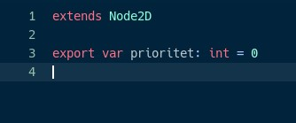
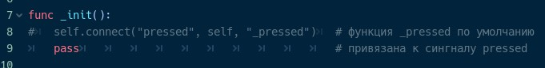
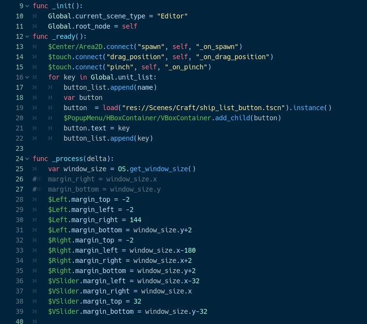

Синтаксически GDscript похож на Python, но многие аспекты взяты из Java Script
Godot имеет некоторые области видимости, в которых можно или нельзя писать определённые команды
Самой верхней областью, является область объявления. В ней можно объявлять глобальные переменные, функции и классы, но нельзя писать команды
Команды и подпрограммы можно прописывать внутри функций, так же внутри функций можно объявлять локальные переменные, которые существуют только в контексте этой функции
Отделение областей видимости выполняется с помощью табулирования, как и в Python

Комментарии в GDScript начинаться со знака решётки “#”
Каждый объект имеет встроенные функции, которые можно переопределить. По умолчанию они ничего не выполняться, хотя и вызваться всегда
_init – выполняется при инициализации объекта
_ready – когда объект (нода) готова и существует на сцене
_process – выполняться один раз за кадр
_physics_process – выполняется 60 раз в секунду